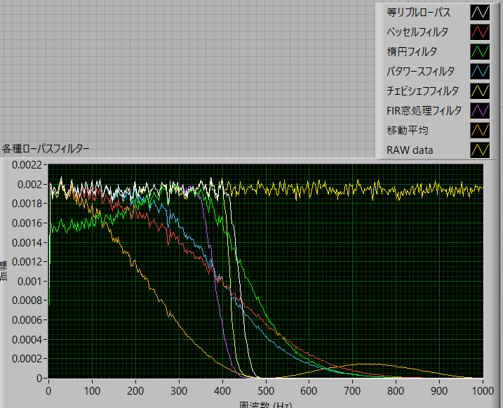
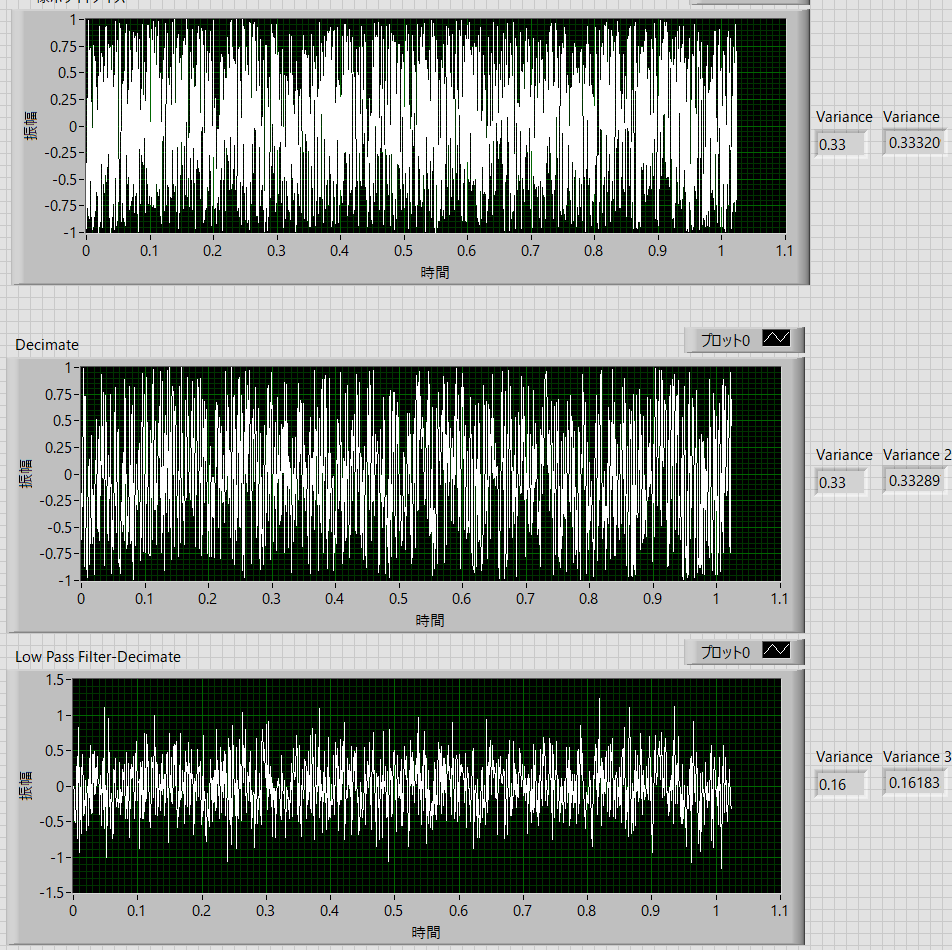
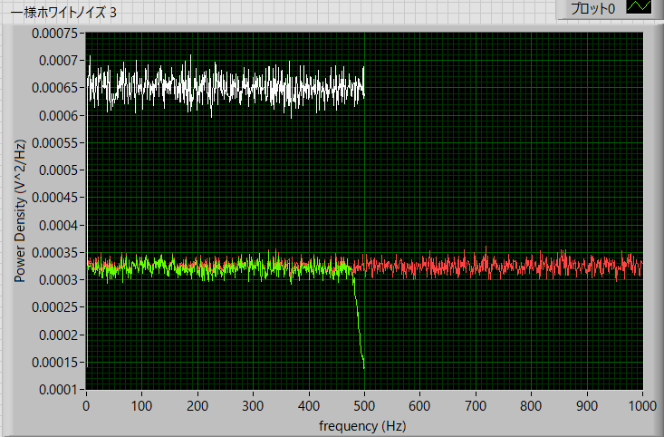

パワースペクトルの実際の作業内容-09
ローパスフィルタ
ローパスフィルタとは，ここ，にあるように，
ある周波数より低い周波数の成分はほとんど減衰させず，高い周波数の成分を減衰させるフィルタ
となります．
この逆が，ハイパスフィルタ（低い周波数成分を減衰させる）
ある周波数帯のみを透過させるのが，バンドバスフィルタ
ある周波数帯のみを減衰させるのが，バンドストップフィルタ
です．
フィルタにもいろんな手法があるようです．
FIR窓処理フィルタ
サビツキー・ゴーレイFIR平滑化フィルタ
ゼロ位相のフィルタ
チェビシェフ
バタワースフィルタ
ベッセルフィルタ
逆fフィルタ
逆チェビシェフフィルタ
数学的モフォロジーフィルタ
楕円フィルタ
中央値フィルタ
等リプルフィルタ
などなど（いずれも，Labviewコマンドより）．
移動平均もローパスフィルタの一種ですね．
私にはこれらの原理，計算方法，特性など．．．まったくわかりません．．．．
ですので，特性のよいフィルターを選びます．それは，
カット周波数がシャープ
透過領域が平坦（できれば100％）
減衰領域が限りなく０に近い
というものでしょうか．
実際に，Labview，でいくつかのフィルタ特性を調べてみました．

という具合になりました．これは単にFFTの計算です．また各種フィルターはパラメータの設定によって特性が変わります．
これを見ると，”チェビシェフフィルタ”が上記の条件を満たしているので，これを使っていこうと思います（見た目なのでちゃんとした根拠はありません）
移動平均の特性がとても緩やかなのがわかります．
チェビシェフフィルタを通して，間引きした結果が下図となります．
元データ
一様ホワイトノイズ
実際の波形の時間 (s) ： Stime = 1.028 s
サンプル周波数 (1/s) ： Sfreq = 2,000 kHz
サンプル時間分解能 (s) ： dt = 0.0005 ms
実際の波形の数 ： n = 2048
間引き方 ： 1/2
加算平均 ： 1000回

上が元波形，中段が間引きのみ，下段がフィルターを通した後間引いた結果，となります．
右の（左側）の分散値のように，下段のフィルター・間引きの波形の分散値が半分になっていることがわかります．
実際にパワースペクトルをとってみました．
フィルター特性：チェビシェフフィルタ
高域カットオフ周波数：525 Hz
低域カットオフ周波数：475 Hz
リプル(dB) ： 0.1
次数 ： 8
です（細かいパラメータの意味は．．．知りません．．特に次数など．．．すいません）

赤線が元波形，白線が間引きのみ，緑線がフィルターを通した後に間引いた結果，となります．
きれいに，パワーが元波形と一緒で，周波数帯が半分になっていることがわかります．
上の上の波形データの右端の分散値はパワースペクトルから求めた分散値です，ちゃんと半分になっています．
つまり，作業手順として，
ローパスフィルタで高周波領域をカット
カット周波数に応じてデータを間引く
となります．
例えば，
元データのサンプル周波数が，2 kHz，なら
周波数帯はその半分の1 kHz
半分（500 Hz）でカットしたいなら，
500 Hzのローパスフィルタを通す
500 Hz/1000 Hz = 1/2，なので一つずつ間引く
ことで達成できます．
これで低周波領域対策は完了です．
では，高周波領域はどうしたらいいでしょう？